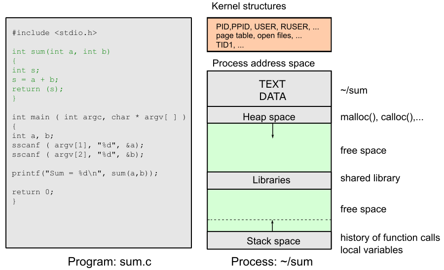
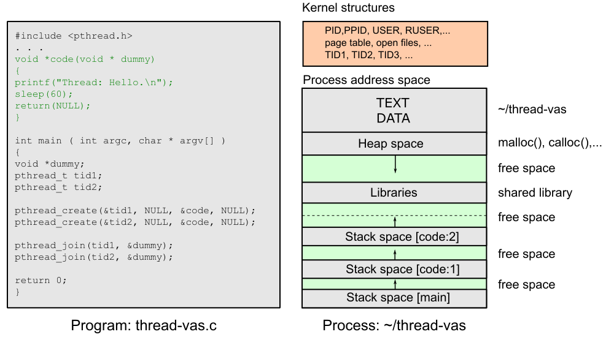
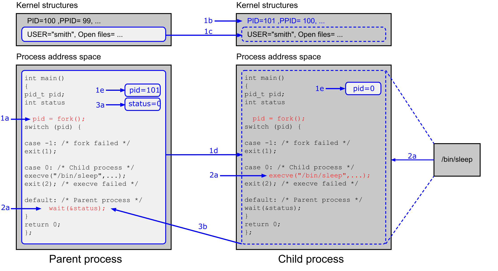
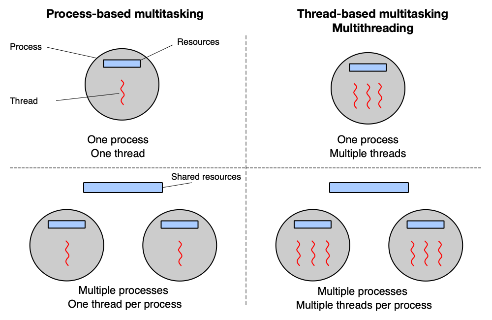
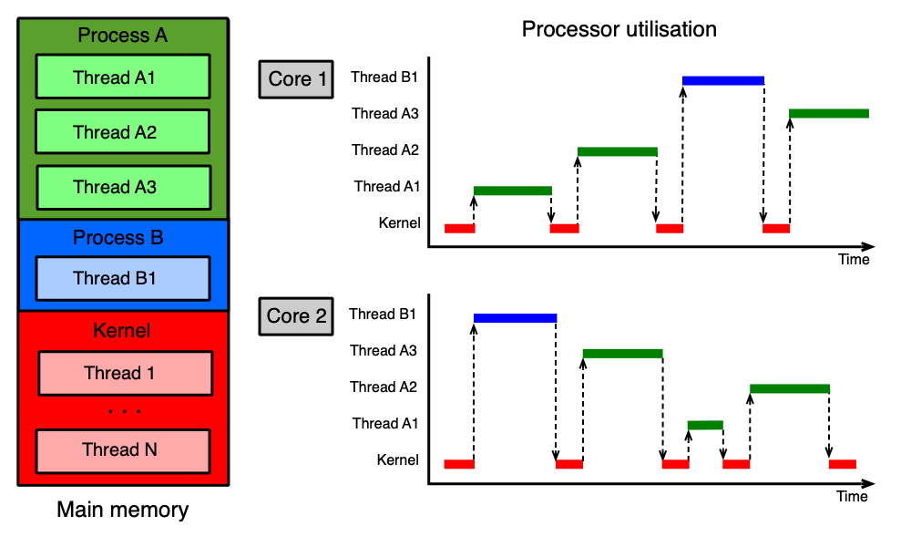
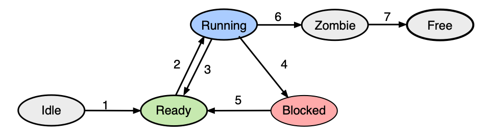
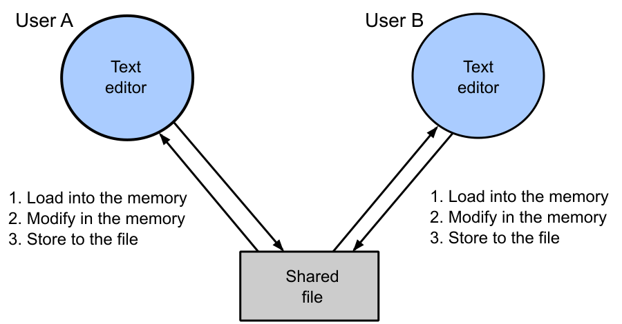
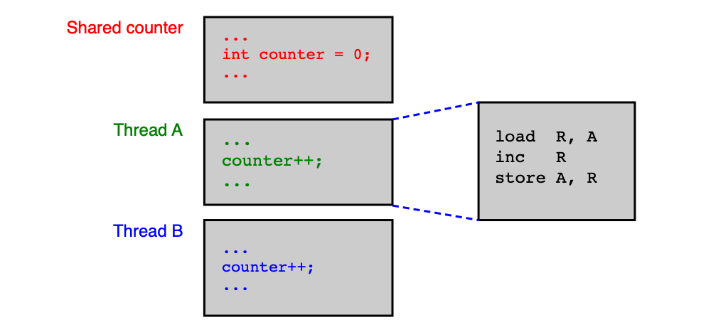

Procesy a vlákna¶
Tato kapitola vysvětluje základní stavební kameny každého moderního operačního systému: co je program, proces a vlákno, jak se procesy vytvářejí a zanikají, jak se vlákna střídají na jádrech CPU a proč paralelní programy mohou obsahovat zákeřné, těžko odhalitelné chyby. Na závěr jsou definovány podmínky, které musí každý korektní paralelní program splňovat.
Obsah stránky
Program¶
Program (nebo aplikace) je z pohledu OS spustitelný binární soubor uložený v sekundární paměti (typicky na disku). Aby mohl OS soubor spustit, musí rozumět jeho formátu. Formát je závislý na cílovém OS:
| Formát | Použití |
|---|---|
| ELF (Executable and Linkable Format) | GNU/Linux, BSD a obecně unixové systémy |
| PE / PE32+ (Portable Executable) | MS Windows |
Spustitelný soubor obsahuje minimálně tyto části:
- TEXT — přeložený binární kód (instrukce procesoru),
- DATA — inicializované globální a statické proměnné,
- informace o sdílených knihovnách a další metadata.
Zjištění formátu a závislostí v Linuxu
Příkaz file identifikuje formát souboru, ldd vypíše sdílené knihovny, na kterých program závisí:
Proces¶
Definice procesu¶
Proces je instance spuštěného programu — tedy program "oživený" v paměti a právě vykonávaný. Je to také základní entita, v jejímž rámci OS alokuje a spravuje prostředky: paměť, vlákna, otevřené soubory, zámky, semafory, sokety a další.
Každý proces má implicitně jedno výpočetní "main" vlákno, které začne provádět funkci main().
Jádro OS si pro každý proces udržuje sadu datových struktur, které slouží k:
- identifikaci — číslo procesu (
PID), číslo rodičovského procesu (PPID), - bezpečnosti — identita procesu (
USER,RUSER), - správě paměti — tabulka stránek pro překlad virtuálních adres (
page table), - správě souborového systému — tabulka deskriptorů otevřených souborů.
Datová struktura procesu v Linuxu
Linux interně nerozlišuje ostře mezi procesem a vláknem — obojí je reprezentováno strukturou task_struct. Pole pid identifikuje konkrétní úlohu, tgid (Thread Group ID) identifikuje skupinu vláken patřících jednomu procesu. Pro nový proces se tgid = pid; pro nové vlákno se pid přiřadí nová hodnota, ale tgid se zkopíruje od tvůrce.
struct task_struct {
pid_t pid; // Process ID
pid_t tgid; // Thread group ID
struct files_struct *files; // Open file information
struct mm_struct *mm; // Memory descriptor
struct signal_struct *signal; // Signal handling
u64 utime; // User time
u64 stime; // System time
...
int exit_state; // Active, zombie, dead
int exit_code; // Return code
int exit_signal; // SIGCHLD, SIGKILL,...
...
struct list_head tasks; // Doubly linked circular list
struct task_struct *real_parent; // Real parent
struct task_struct *parent; // Recipient of return code
struct list_head children; // Children
struct list_head sibling; // Siblings
struct task_struct *group_leader; // Main thread
struct list_head thread_node; // Thread group list node
...
}
Při vzniku nového procesu část datových struktur zdědí hodnoty od rodiče (například tabulka deskriptorů souborů), zatímco část dostane zcela nové hodnoty (například pid).
Vztahy mezi procesy v Linuxu¶
Procesy v Linuxu tvoří stromovou hierarchii. Každý proces zná svého rodiče a své potomky. Díky tomu mohou vzájemně komunikovat. Všechny task_struct jsou zároveň propojeny do obousměrně zřetězeného kruhového seznamu všech úloh v systému (pole tasks), takže jádro může efektivně procházet veškeré procesy a vlákna.
Jak Linux rozlišuje procesy a vlákna
Vlákna vytvořená procesem PID 9 (například PID 10 a PID 11) mají stejné tgid jako PID 9, ale různé pid. Rodičem PID 10 a PID 11 je z pohledu OS rodič procesu PID 9 (například PID 6) — přesto PID 6 nemá PID 10 a PID 11 ve svém seznamu potomků. Vlákna jsou navíc propojena přes signal->thread_head.
Adresový prostor procesu¶
Každý proces má svůj virtuální adresový prostor, který je od sebe navzájem izolovaný. Skládá se z několika segmentů: kód (TEXT), data (DATA), halda (heap), zásobník (stack) a mapované sdílené knihovny.

Zobrazení adresového prostoru v Unixu
Příkaz pmap -x <PID> zobrazí detailní mapu paměti procesu včetně přístupových práv a mapovaných souborů:
solaris:~> pmap -x 5652
5652: -bash
Address Kbytes RSS Anon Locked Mode Mapped File
0000000100000000 1000 1000 - - r-x---- bash
00000001001FA000 48 48 16 - rwx---- bash
000000CC71630000 256 256 192 - rw----- [ heap ]
...
FFFFFD6DA3C10000 56 56 8 - rw----- [ stack ]
Na výpisu jsou patrné segmenty kódu (r-x), dat (rwx), haldy a zásobníku, ale také mapované sdílené knihovny (např. libc.so.1).
Vlákno¶
Definice vlákna¶
Vlákno (historicky označované jako light-weight process, lwp) je výpočetní entita — proud instrukcí — které OS přiděluje jádro CPU. Zatímco proces definuje prostředí a zdroje, vlákno definuje konkrétní výpočet, který se v daném prostředí provádí.
Vlákna vytvořená v rámci jednoho procesu sdílí většinu jeho prostředků: tabulku deskriptorů souborů (files_struct), paměťový deskriptor (mm_struct), zpracování signálů (signal_struct) a další.
Co je specifické pro každé vlákno
Přestože vlákna sdílí mm_struct, každé vlákno má vlastní zásobník (stack). Ten je vláknu vytvořen ještě před spuštěním pomocí systémového volání mmap() a odkaz na něj je předán do clone().
Jádro OS si pro každé vlákno udržuje:
- identifikaci — číslo vlákna
TID(v Linuxu je topidvtask_struct), - zásobník — lokální proměnné a historie volání funkcí,
- kontext přepínání — čítač instrukcí, aktuální hodnoty registrů,
- informace pro plánování — priorita, čas strávený na CPU.
Proces s více vlákny¶
Když proces vytvoří více vláken, všechna vlákna sdílí jeden virtuální adresový prostor (tedy stejný kód, globální data, haldu a mapované soubory), ale každé má vlastní zásobník. To umožňuje paralelní výpočet v rámci jediného procesu.

Vytvoření a ukončení vlákna¶
Každý proces se vytváří s jediným "main" vláknem. Chceme-li spustit více vláken paralelně, máme několik možností:
| Přístup | Příklady |
|---|---|
| Proprietární OS API | Microsoft Windows API, Solaris thread library |
| POSIX Thread Library (pthreads) | GNU/Linux, FreeBSD, MS Windows |
| OpenMP | GNU/Linux, MS Windows, FreeBSD, Solaris |
| Jazyková podpora | C++ (od C++11), Java |
Vytvoření vlákna pomocí POSIX pthreads¶
#include <pthread.h>
void *start_routine(void *dummy) {
printf("Thread: Hello.\n");
sleep(60);
return NULL;
}
int main(int argc, char *argv[]) {
void *dummy;
pthread_t tid1, tid2;
/* Vytvoření dvou vláken */
pthread_create(&tid1, NULL, &start_routine, NULL);
pthread_create(&tid2, NULL, &start_routine, NULL);
/* Čekání na dokončení vláken */
pthread_join(tid1, &dummy);
pthread_join(tid2, &dummy);
return 0;
}
Klíčové funkce:
pthread_create(pthread_t *tid, ..., void *(*start_routine)(void *), ...)— vytvoří nové vlákno, které začne vykonávat funkcistart_routine(). Číslo nového vlákna uloží na adresutid.pthread_join(pthread_t tid, ...)— aktuální vlákno se zablokuje a čeká, dokud vlákno s identifikátoremtidneskončí. Analogiewait()pro vlákna.
Více informací: man pthread_create, man pthread_join.
Ukončení vlákna¶
Vlákno skončí, jakmile se vrátí z funkce, kterou vykonává. Existují také explicitní způsoby ukončení:
| Způsob | Popis |
|---|---|
return z funkce vlákna |
Normální ukončení daného vlákna |
return 0 z main() |
Ukončí hlavní vlákno a s ním i všechna ostatní vlákna se stejným tgid |
pthread_exit() |
Ukončí pouze volající vlákno; sdílené struktury zůstanou (pokud nejde o poslední vlákno skupiny) |
exit() |
Ukončí všechna vlákna se stejným tgid okamžitě |
Uvolňování sdílených struktur
Po zavolání pthread_exit() se uvolní pouze zásobník daného vlákna (pomocí munmap()). Sdílené struktury (files_struct, mm_struct, signal_struct) zůstanou zachovány, dokud neskončí poslední vlákno skupiny. Zda je vlákno poslední lze zjistit z čítače signal->live.
Vytvoření a ukončení procesu¶
Vytvoření procesu — fork, execve, wait¶
U zkoušky
Trojice fork() / execve() / wait() je jádrem každé otázky na tvorbu procesů v Unixu. Musíte přesně vědět, co každá funkce vrací a co se stane s adresovým prostorem.
V unixových systémech se nový proces vytváří pomocí systémových volání fork(2) a execve(2). V MS Windows k tomu slouží CreateProcessA().
Nový proces může být:
- Klon rodiče (po samotném
fork()) — jádro alokuje nové datové struktury, adresový prostor rodiče se zkopíruje do potomka, čítač instrukcí ukazuje na instrukci následující zafork(). - Úplně nový proces (po
fork()+execve()) — adresový prostor se přepíše obsahem nového programu, zásobník a halda jsou prázdné, čítač instrukcí ukazuje na první instrukci nového programu.
Popis funkcí¶
fork()
Vytvoří nový proces, který je kopií volajícího. Vrací:
- v rodičovském procesu: PID potomka (při chybě -1),
- v potomkovi: vždy hodnotu 0.
Po návratu z fork() oba procesy běží nezávisle od následující instrukce.
execve(const char *filename, ...)
Adresový prostor procesu, ve kterém je volána, je zcela přepsán obsahem spustitelného souboru filename. Výpočet začíná od začátku nového programu. Původní kód procesu přestane existovat.
wait(int *status)
Zablokuje rodičovský proces, dokud se některý jeho potomek neukončí. Varianta waitpid(2) umožňuje čekat na konkrétního potomka. Návratový kód potomka je uložen na adresu status.
Více informací: man 2 fork, man 2 execve, man 2 wait.
Ukázkový kód¶
int main() {
pid_t pid;
int status;
pid = fork();
switch (pid) {
case -1: /* Chyba */
exit(1);
case 0: /* Potomek */
char *argv[] = { "sleep", "30", NULL };
char *envp[] = { NULL };
execve("/bin/sleep", argv, envp);
exit(0);
default: /* Rodič */
wait(&status);
}
return 0;
}
Průběh fork/exec/wait krok za krokem¶

Postup je následující:
- 1a Volání
fork()v rodiči způsobí alokování datových struktur v jádře a paměti pro nový proces. - 1b Část datových struktur nového procesu dostane nové hodnoty (např. nové
pid). - 1c Část datových struktur se zkopíruje od rodiče (např. tabulka deskriptorů souborů).
- 1d Obsah adresového prostoru rodiče se "zkopíruje" do adresového prostoru potomka.
- 1e Z
fork()se vrátí — rodiči se uloží PID potomka, potomkovi hodnota0. Oba pokračují dál. - 2a Rodič zavolá
wait()a uspí se. Potomek zavoláexecve()a načte nový program. - 3a Potomek se ukončí (
exit()neboreturn). Návratový kód je uložen vstatus. - 3b Rodič se probudí z
wait()a pokračuje dál.
Ukončení procesu¶
Jádro OS při ukončení procesu: - pokusí se předat návratový kód rodiči, - ukončí všechna vlákna patřící procesu, - uvolní adresový prostor a příslušné datové struktury v jádře.
Způsoby ukončení:
- Proces se ukončí sám — dosažením konce
main()(return) nebo explicitním volánímexit(3)/TerminateProcess(). - Proces je ukončen jádrem — fatální chyba (dělení nulou, chybná manipulace s pamětí), přijatý signál apod.
Implementační detaily v Linuxu¶
Volání exit() nebo return z "main" vlákna spustí systémové volání exit, které v task_struct:
- zapíše návratovou hodnotu do
exit_code, - nastaví
exit_statena zombie, - nastaví
exit_signal(defaultněSIGCHLD), - notifikuje rodiče signálem,
- vzdá se procesoru — od nynějška nebude plánován.
Rodič poté:
- pokud již čekal v wait(), probudí se, přečte návratový kód a uvolní task_struct potomka,
- pokud teprve zavolá wait(), OS zkontroluje, zda existují zombie potomci; pokud ano, převezme kód a uvolní strukturu, pokud ne, rodič se uspí.
Adopce sirotků
Pokud rodič skončí dříve než jeho potomci, OS přenastaví ukazatel *parent u všech potomků na proces init (PID 1). Init tyto "sirotky" adoptuje a po jejich skončení správně převezme návratový kód.
Příklad: Kolik procesů vznikne?
Kolik celkem procesů vznikne a kdy skončí poslední z nich?
int main() {
pid_t pid;
int i;
for (i = 0; i < 3; i++) {
pid = fork();
if (pid == 0) {
sleep(10);
}
}
return 0;
}
Každá iterace zdvojnásobí počet procesů (každý existující proces zavolá fork()). Po první iteraci jsou 2 procesy, po druhé 4, po třetí 8. Celkem vznikne tedy 8 procesů (včetně původního). Potomci, kteří jsou v podmínce pid == 0, volají sleep(10) a pak skončí. Nicméně potomci vytvořeni v pozdějších iteracích jsou také původní i nově vzniklé procesy — je třeba pečlivě sledovat větve.
Multitasking a multithreading¶

Multitasking (nebo multithreading) je schopnost OS zdánlivě vykonávat více úloh souběžně. Na systému s jediným jádrem CPU to OS zajišťuje rychlým střídáním vláken — každé vlákno dostane krátký časový úsek (kvantum) a pak je vystřídáno jiným. Na vícejádrovém systému mohou vlákna běžet skutečně paralelně, každé na svém jádře.
Plánování vláken a přepínání kontextu¶
Plánování vláken¶
Jádro OS a vlákna aplikací sdílejí omezený počet "logických" jader CPU. Jedno jádro může v jednom okamžiku zpracovávat právě jedno vlákno. Aby se vlákna spravedlivě podělila o dostupná jádra, používá OS preemptivní plánování.
Preemptivní plánování funguje takto:
- OS vybere vlákno na základě plánovacích kritérií (priorita, čas čekání, ...).
- Přidělí mu volné jádro CPU a časové kvantum — po tuto dobu vlákno běží.
- Jádro CPU je vláknu odebráno, pokud:
- uplyne časové kvantum (přerušení od časovače),
- vlákno provede systémové volání (např. V/V operaci),
- nastane přerušení (např. dokončení V/V operace).
Přepínání kontextu¶
Přepínání kontextu (context switch) je mechanismus, při kterém se vlákna vystřídají v používání jádra CPU. Kontext vlákna jsou všechny informace potřebné k tomu, aby bylo vlákno možné obnovit přesně od místa, kde bylo přerušeno — zejména čítač instrukcí (PC) a obsah všech registrů procesoru.
Přepnutí kontextu probíhá ve třech krocích:
- Uložení kontextu přerušeného vlákna.
- Výběr dalšího vlákna plánovačem OS.
- Obnovení (nastavení) kontextu nového vlákna.
Vlákna sama o sobě "neví", že jsou přerušována — žijí v iluzi nepřetržitého běhu od začátku do konce.

Stavy vláken¶
U zkoušky
Stavy vláken a přechody mezi nimi jsou standardní zkouškovou otázkou. Naučte se nejen názvy stavů, ale také jaká událost způsobí přechod mezi nimi.
Stav vlákna popisuje, co se s ním právě děje. Základní stavy jsou:

| Stav | Popis |
|---|---|
| Idle | Vlákno právě vzniklo |
| Ready | Vlákno čeká, až mu bude přiděleno jádro CPU |
| Running | Vlákno je právě zpracováváno jádrem CPU |
| Blocked | Vlákno čeká na událost (dokončení V/V operace, příchod signálu, ...) |
| Zombie | Vlákno se ukončuje, ale ještě nebylo vše dokončeno |
| Free | Vlákno bylo kompletně zrušeno (pouze teoretický stav) |
Časově závislé chyby a kritické sekce¶
Deterministický algoritmus a časově závislé chyby¶
Deterministický algoritmus vždy ze stejných vstupních podmínek vytvoří stejné výsledky — bez ohledu na to, kdy a jak rychle běží.
Časově závislé chyby (race conditions) jsou situace, kdy dvě nebo více vláken přistupuje ke společným sdíleným prostředkům (sdílené proměnné, sdílené soubory, ...) a výsledek deterministického algoritmu závisí na rychlosti a pořadí, v jakém tato vlákna tyto prostředky používají.
Zákeřnost časově závislých chyb
Časově závislé chyby vykazují náhodný výskyt — projevují se jen za určitých okolností (konkrétní pořadí přepnutí vláken) a jsou proto velmi obtížně odhalitelné a reprodukovatelné. Při hledání může pomoci nástroj jako Valgrind, ale nelze se na něj stoprocentně spoléhat. Nejlepší obranou je správný návrh paralelního algoritmu.
U zkoušky
Časově závislé chyby a kritické sekce jsou intenzivně zkoušeny. Musíte být schopni identifikovat race condition v ukázkovém kódu, popsat, proč k ní dojde, a navrhnout opravu.
Příklad: Editace souboru dvěma uživateli¶

Dva uživatelé (nebo dvě vlákna) čtou soubor, každý provede úpravu a zapíše zpět. Pokud oba přečtou soubor ve stejnou chvíli (ještě před zápisem druhého), zápis toho druhého přepíše změny prvního. Výsledný soubor bude obsahovat změny jen jednoho z nich, ačkoliv oba zapsali.
Příklad: Inkrementace sdíleného čítače¶

Dvě vlákna inkrementují společný čítač uložený v paměti na adrese A. Procesor provádí inkrementaci ve třech krocích:
load R, [A] ; načti hodnotu z paměti do registru R
inc R ; inkrementuj registr R
store [A], R ; ulož hodnotu z registru zpět do paměti
Pokud dojde k přepnutí kontextu mezi instrukcí load a store, může nastat tento scénář:
Vlákno 1: load R1, [A] → R1 = 5
Vlákno 2: load R2, [A] → R2 = 5 (přečte starou hodnotu!)
Vlákno 1: inc R1 → R1 = 6
Vlákno 1: store [A], R1 → A = 6
Vlákno 2: inc R2 → R2 = 6
Vlákno 2: store [A], R2 → A = 6 (přepíše výsledek vlákna 1!)
Ačkoliv obě vlákna provedla inkrementaci, výsledek je 6 místo správného 7. Jedna inkrementace byla ztracena.
Kritické sekce¶
Kritická sekce (critical section) je část programu, ve které vlákno používá sdílené prostředky (sdílená proměnná, sdílený soubor, ...).
Sdružené kritické sekce jsou kritické sekce dvou nebo více vláken, které se týkají téhož sdíleného prostředku.
Vzájemné vyloučení (mutual exclusion) je pravidlo, že vláknům není dovoleno nacházet se ve sdružené kritické sekci současně. Jinými slovy: přístup ke sdílenému prostředku musí být výlučný — v daném okamžiku ho smí používat nejvýše jedno vlákno.
Správné pořadí pojmů
Problém vzniká tehdy, když dvě vlákna vstoupí do svých sdružených kritických sekcí naráz. Řešením je zajistit vzájemné vyloučení — to je cílem synchronizačních primitiv (mutexy, semafory, ...) probíraných v dalších kapitolách.
Korektní paralelní program¶
Při psaní paralelních programů musí programátor dodržovat tato pravidla:
-
Žádné předpoklady o rychlosti vláken. Různá vlákna mohou běžet různě rychle v závislosti na plánování a zátěži systému. Správnost programu nesmí záviset na tom, které vlákno je "rychlejší".
-
Zajistit výlučný přístup ke sdíleným prostředkům. Vlákna musí být před kritickou sekcí v případě potřeby pozastavena. Zároveň žádné vlákno nesmí čekat neomezeně dlouho na vstup do kritické sekce.
-
Mimo kritickou sekci vlákno nesmí být blokováno ostatními vlákny. Synchronizace smí zdržovat vlákno pouze po dobu nezbytně nutnou.
U zkoušky
Tato tři pravidla tvoří základ pro analýzu správnosti synchronizačních algoritmů — objevují se jako hodnotící kritéria v zadáních příkladů.
Shrnutí¶
- Program je binární soubor na disku (ELF pro Unix, PE pro Windows); obsahuje TEXT (kód), DATA (proměnné) a metadata.
- Proces je instance spuštěného programu — entita pro alokaci prostředků; má vlastní virtuální adresový prostor a minimálně jedno vlákno.
- Vlákno je proud instrukcí, které OS přiděluje jádro CPU; vlákna sdílí adresový prostor procesu, ale mají vlastní zásobník a kontext.
- V Linuxu jsou procesy i vlákna reprezentovány strukturou
task_struct; rozlišují se pomocípidatgid. - Nový proces v Unixu vzniká voláním
fork()(klon rodiče) +execve()(načtení nového programu); rodič čeká na potomka pomocíwait(). - Ukončující se proces přejde do stavu zombie, dokud rodič nepřevezme návratový kód; pokud rodič skončí dříve, init adoptuje sirotky.
- Vlákna se na jádrech CPU střídají pomocí preemptivního plánování — OS přiděluje časová kvanta a při přepínání ukládá/obnovuje kontext vlákna.
- Vlákno může být ve stavech: Idle, Ready, Running, Blocked, Zombie, Free.
- Časově závislé chyby (race conditions) vznikají při nekontrolovaném přístupu více vláken ke sdíleným prostředkům; mají náhodný výskyt a jsou těžko odhalitelné.
- Kritická sekce je část kódu přistupující ke sdílenému prostředku; vzájemné vyloučení zabraňuje souběžnému vstupu více vláken do sdružených kritických sekcí.
- Korektní paralelní program neklade předpoklady o rychlosti vláken, zajišťuje výlučný přístup ke sdíleným prostředkům a neblokuje vlákna mimo kritickou sekci.
Klíčové pojmy¶
- Program — spustitelný binární soubor uložený v sekundární paměti, obsahující kód (TEXT), data (DATA) a metadata; jeho formát závisí na cílovém OS (ELF, PE).
- ELF (Executable and Linkable Format) — binární formát spustitelných souborů používaný v unixových OS.
- PE (Portable Executable) — binární formát spustitelných souborů používaný v MS Windows.
- Proces — instance spuštěného programu; základní entita OS pro alokaci prostředků (paměť, vlákna, soubory, ...); má vlastní virtuální adresový prostor.
- PID (Process ID) — jedinečné číslo identifikující proces (nebo vlákno) v rámci OS.
- PPID (Parent Process ID) — číslo rodičovského procesu.
- TGID (Thread Group ID) — identifikátor skupiny vláken; všechna vlákna jednoho procesu sdílí stejné TGID, které se rovná PID hlavního vlákna.
task_struct— datová struktura v Linuxovém jádře reprezentující jak proces, tak vlákno; obsahuje PID, TGID, paměťový deskriptor, tabulku souborů a další.- Virtuální adresový prostor — izolovaný paměťový prostor každého procesu; skládá se ze segmentů TEXT, DATA, heap, stack a mapovaných knihoven.
- Vlákno — výpočetní entita (proud instrukcí), které OS přiděluje jádro CPU; vlákna v procesu sdílí adresový prostor, ale mají vlastní zásobník a kontext.
- TID (Thread ID) — číslo vlákna; v Linuxu totožné s
pidvtask_struct. - Light-weight process (LWP) — historický název pro vlákno.
- Zásobník vlákna (stack) — privátní paměťová oblast vlákna pro lokální proměnné a historii volání funkcí; v Linuxu alokována pomocí
mmap(). fork()— systémové volání v Unixu, které vytvoří nový proces jako kopii rodiče; v rodiči vrátí PID potomka, v potomkovi vrátí 0.execve()— systémové volání, které přepíše adresový prostor procesu obsahem nového spustitelného souboru; výpočet začíná od začátku nového programu.wait()/waitpid()— systémové volání, které zablokuje rodičovský proces, dokud se potomek (nebo konkrétní potomek) neukončí; předá návratový kód.- Zombie — stav ukončeného procesu, jehož
task_structještě nebyla uvolněna, protože rodič nepřevzal návratový kód. - Adopce sirotků — mechanismus, při kterém init (PID 1) přijme potomky procesu, který skončil dříve než oni.
- POSIX Thread Library (pthreads) — přenositelné rozhraní pro práci s vlákny na unixových systémech; klíčové funkce jsou
pthread_create()apthread_join(). pthread_create()— vytvoří nové vlákno, které bude vykonávat zadanou funkci.pthread_exit()— ukončí pouze volající vlákno; sdílené struktury procesu zůstanou zachovány.pthread_join()— zablokuje volající vlákno, dokud zadané vlákno neskončí.- Multitasking / Multithreading — schopnost OS zdánlivě (nebo skutečně na vícejádrovém HW) provádět více úloh souběžně.
- Preemptivní plánování — strategie, při které OS přiděluje vláknům časová kvanta a může vlákno přerušit i bez jeho "souhlasu".
- Časové kvantum — časový úsek, po který OS nechá vlákno běžet na jádře CPU, než provede přeplánování.
- Přepínání kontextu (context switch) — mechanismus uložení kontextu běžícího vlákna a obnovení kontextu jiného vlákna; zajišťuje iluzi nepřerušovaného běhu každého vlákna.
- Kontext vlákna — veškeré informace potřebné k obnovení výpočtu vlákna od místa přerušení; zejména čítač instrukcí a hodnoty registrů.
- Stav vlákna — Idle (nové), Ready (čeká na CPU), Running (běží), Blocked (čeká na událost), Zombie (ukončuje se), Free (zrušeno).
- Časově závislá chyba (race condition) — chyba vzniklá nekontrolovaným souběžným přístupem více vláken ke sdíleným prostředkům; výsledek závisí na pořadí a rychlosti vláken, vykazuje náhodný výskyt.
- Kritická sekce (critical section) — část kódu, ve které vlákno přistupuje ke sdílenému prostředku.
- Sdružené kritické sekce — kritické sekce dvou nebo více vláken týkající se téhož sdíleného prostředku.
- Vzájemné vyloučení (mutual exclusion) — princip, že sdružené kritické sekce nesmí být vykonávány souběžně; nejvýše jedno vlákno smí být v kritické sekci najednou.
- Deterministický algoritmus — algoritmus, který ze stejných vstupů vždy produkuje stejné výstupy bez ohledu na časování.